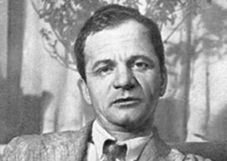
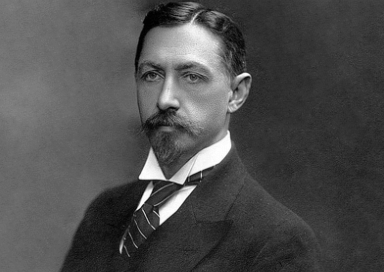
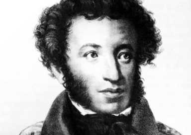
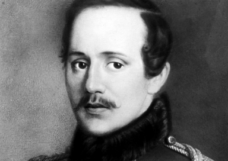

Платонов А.П.
Расцвет творчества приходится на 1927–1930 годы, в это время созданы самые значимые романы — «Котлован» и «Чевенгур».

Бунин А.И.
В 1903 году получил Пушкинскую премию за книгу «Листопад» и перевод «Песни о Гайавате»; в 1909 году был повторно удостоен этой награды за 3-й и 4-й тома Собрания сочинений. В 1909 году избран почётным академиком по разряду изящной словесности.
Маршак Я.С.
В 1923 году Маршак выпускает свои первые стихотворные детские книги «Дом, который построил Джек», «Детки в клетке», «Сказка о глупом мышонке».

Пушкин А.С.
Первые произведения Пушкина, такие как «Руслан и Людмила» и «Евгений Онегин», сделали его знаменитым.
Достоевский Ф.М.
После возвращения из каторги Достоевский продолжил литературную деятельность, создав такие шедевры, как «Преступление и наказание», «Идиот», «Бесы» и «Братья Карамазовы».

Лермонтов М.Ю.
Первые произведения Лермонтова, такие как «Парус» и «Демон», сделали его известным в литературных кругах.